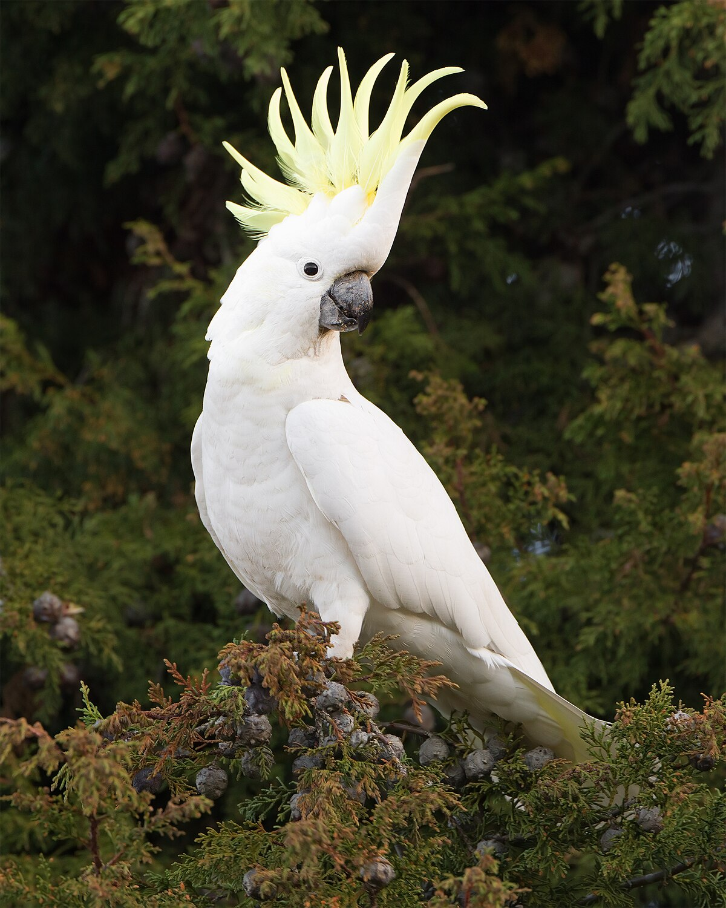

- Loros
- Minas
- Cacatúas
- Guacamayos 

- Pavo real
- Tucán
- Flamenco
- Avestruz


Las aves exóticas son especies de aves que no son autóctonas del lugar donde se pueden observar. Estas aves provienen de las selvas tropicales de América, África y Australia, y se caracterizan por su belleza y riqueza de colorido.
En general, las aves exóticas se dividen en dos subgrupos: las aves de compañía y las aves ornamentales. Las primeras son aquellas que pueden interactuar con los humanos de manera significativa, como imitar sonidos, realizar trucos y establecer una relación cercana con su cuidador.